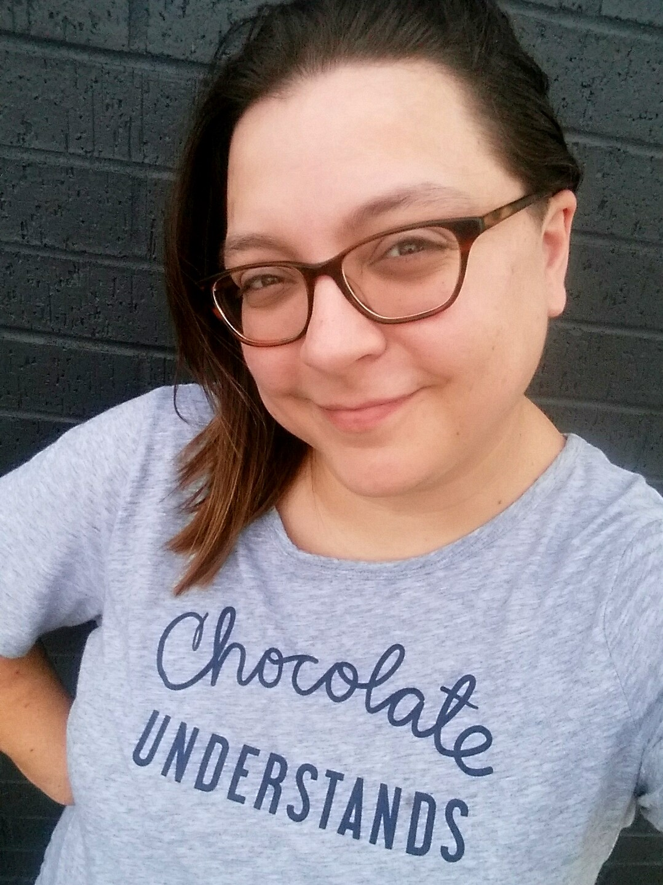

Linda Thompson
Scroll on in!
So, Linda - what projects have you worked on?
Nice! Where did you learn how to do this?
Awesome! What else should we know about you?
Who I Am
I have an inquisitive, resilient mind, along with 12+ years of experience managing client projects and running offices with ease (and a touch of chaos). I derive my greatest joys and challenges from investigating issues - diving in deep to get to the root of the problem, and organizing the information so it's easier for those who come after me. Crafting with code, capturing and playing with data, and bringing ideas to life never cease to amuse me.
I also love cats, chocolate, puzzles, and stories of all kinds (whether from video games, podcasts, or books)!
My Goals
I'm currently looking for my first developer job!
I really enjoy working with JavaScript, wrangling data, and designing websites. I'm fairly confident in my front-end skills, though I possess just enough back-end skill to be dangerous! I'd really love to work on location (looking to relocate!), where I can be truly immersed in programming and be able to learn and grow with smarter folks than me. I'm not looking to be the best - just continuously better than I am in this moment.
Currently Learning
- Complete Node Developer Course - Getting better aquainted with Node, MongoDB, Express, and more! Currently building out the API for a task / to-do app, which will include user log-ins, file uploading, sending emails, and testing!
Thanks for stopping by! If you like what you've seen or want to know more, please reach out - I'm always looking to make new connections!